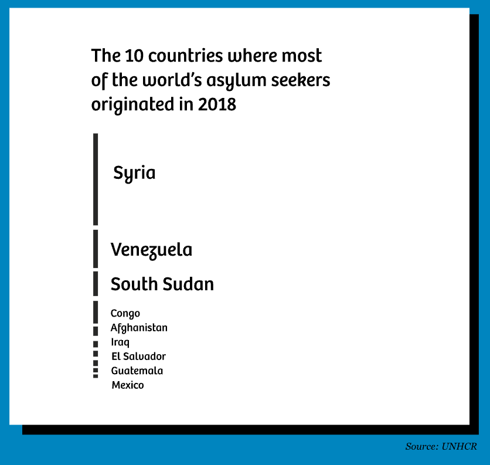
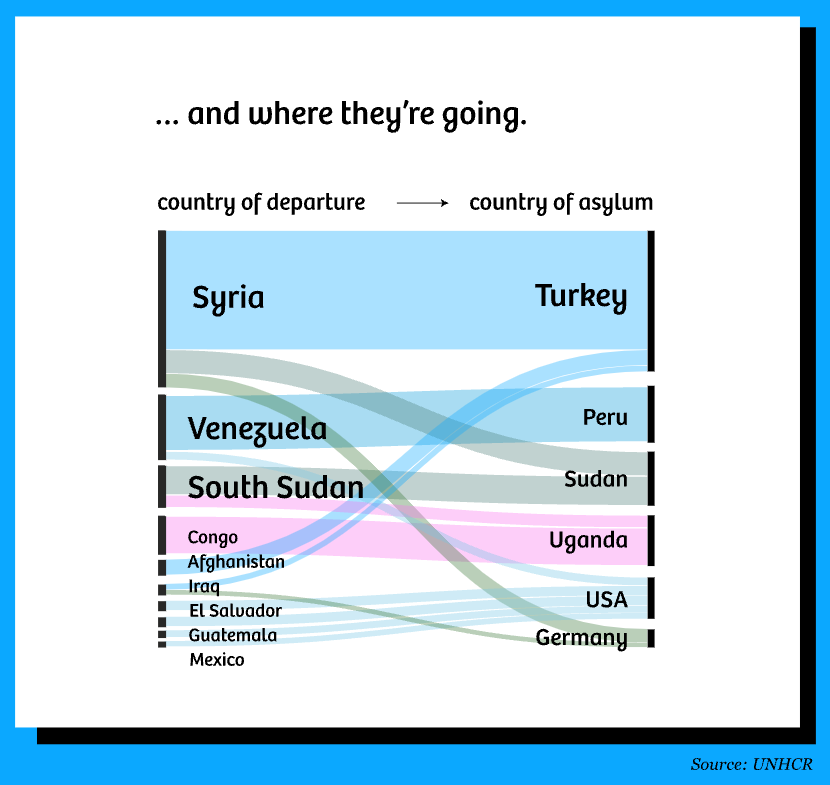
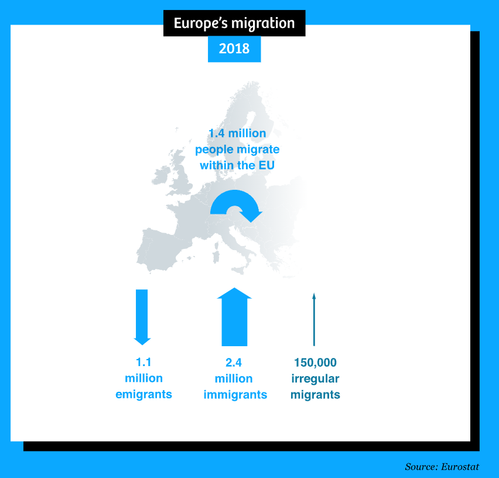
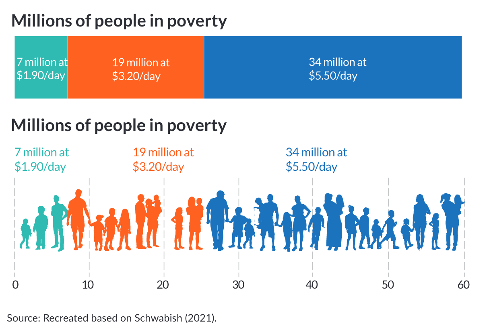
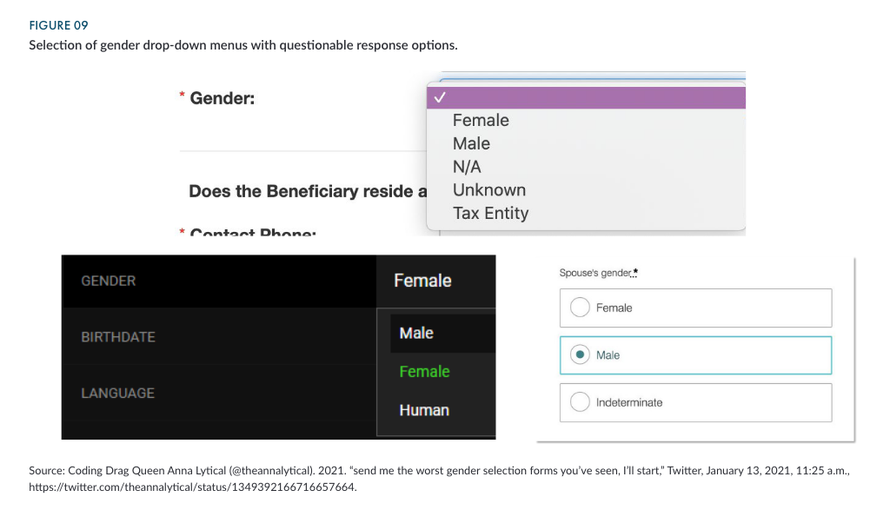
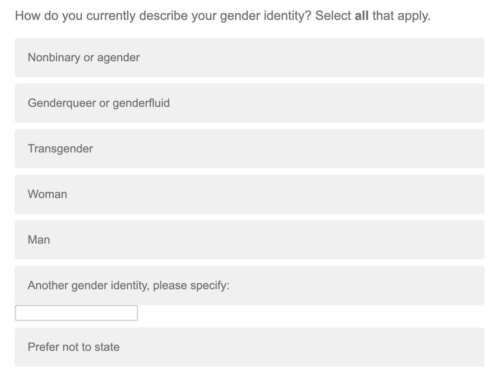
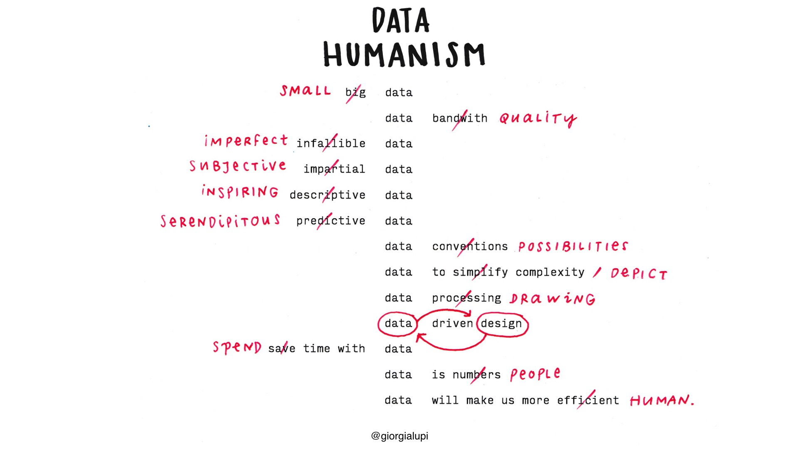
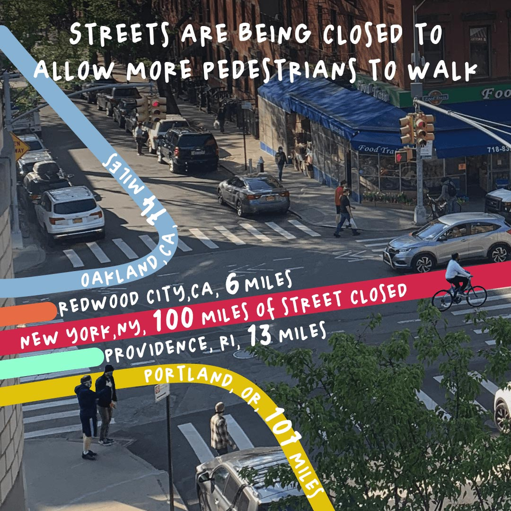

Redlining: the practice of categorically withholding financial services, especially mortgages, from neighborhoods that have a significant number of racial or ethnic minorities
Between 1935-1940, the Home Owners’ Loan Corporation (HOLC) graded “residential security” (i.e. financial risk) of neighborhoods in most major metropolitan areas across the US
Color-coded maps depict grades, where green represents the “best” neighborhoods and safest investments. Red represents “hazardous” neighborhoods and riskiest investments.
Neighborhoods earned a red grade if African Americans lived in it, even if it was a middle-class neighborhood of single-family homes (Rothstein 2017)
Our job as data scientists . . .
…is to actively incorporate equity awareness when working with data and generating data products (e.g. visualizations). Not all visuals are overtly racist or discriminatory, but we as data practitioners must recognize and work against misusing or misrepresenting data in ways that can harm communities and perpetuate systemic discrimination.
Urban Institute’s Do No Harm Guide, by Jonathan Schwabish and Alice Feng (2021)
guidelines on how to apply a DEI lens to not just words, colors, icons, etc., but also the process of crafting communication products
includes checklists & tool kits that focus on the often hidden / subtle ways that data analysts and communicators fail to incorporate equitable awareness in the data they use and they products they create
Our choices affect how viewers perceive and interpret information
Discuss how you perceive, interpret, and comprehend this map with your learning partner(s). What thoughts or emotions does it invoke? Why do you think you feel those emotions?
04:00
Design choices influence viewers’ perception
Arrows reminiscent of battle map
Red = color of danger
LARGE, direct arrows (larger than most countries)
Title language portrays criminal activity
Doesn’t show where migrants actually come from
Design choices influence viewers’ perception
Discuss how you might redesign this map to make us feel less
“like we are being overrun by huge numbers of anonymous enemies, coming at us en masse from all corners of the globe to disrupt our orderly lives”
-Vermulen, De Korte, Van Houtum
04:00
Use different colors
Change the title
Adjust the size of the arrows
Don’t use arrows altogether
Consider format and information
Consider format and information
Provide context

Provide context

Provide context

Some important takeaways
Quotes from Vermulen, De Korte, and Van Houtum
“As journalists and illustrators, there is no way around simplifying the world for the sake of readability. Whether in maps or in text. But we can be much more aware of the consequences of those simplifications – and be honest about what’s happening.”
“… take a moment to contemplate who authored this visual story and what message the author wants to convey. And why.”
Connecting readers with content requires empathy – for both the communities whose data we are visualizing and the readers / target audiences of our work (Schwabish & Feng 2021)
Empathy is defined as:
“the action of understanding, being aware of, being sensitive to, and vicariously experiencing the feelings, thoughts, and experience of another”
Each square represents US service member who died in Iraq or Afghanistan. Source: Faces of Death (New York Times); (Note: this is an archived page and a bit glitchy)
Connecting readers with content requires empathy
Put people first
Use personal connections to help readers and users connect with the material
Pair data-driven charts with personal stories, or help readers understand the “far vs. near” (i.e. overall metrics + smaller ranges / groups of data)
This map focuses on one of the deadliest days in Baghdad, with 114 separate episodes of violence resulting in the deaths of 160 Iraqi citizens and police officers | Source: A Deadly Day In Baghdad (New York Times)
Connecting readers with content requires empathy
Put people first
Use personal connections to help readers and users connect with the material
Use a mix of quantitative and qualitative approaches to tell a story
Focusing on just numbers without context can overlook important aspects of a story, such as the “why” and “how”
Mapping the theme of EV charging convenience, which was most tied to specific places. Above, transcript snippets around positive associations with convenience. | Source: Attitudes and Experiences with Electric Vehicles, by Diana Lavery
Connecting readers with content requires empathy
Put people first
Use personal connections to help readers and users connect with the material
Use a mix of quantitative and qualitative approaches to tell a story
Create a platform for engagement
Interactivity allows users to find themselves in the data or discover stories.
Use personal connections to help readers and users connect with the material
Use a mix of quantitative and qualitative approaches to tell a story
Create a platform for engagement
Consider how your framing of an issue can create a biased emotional response
“Rather than looking at where crimes are committed, we looked at where prisoners live, and the maps that resulted showed the urban costs of incarceration and suggested how those dollars might be better spent on investing in communities.”
Use personal connections to help readers and users connect with the material
Use a mix of quantitative and qualitative approaches to tell a story
Create a platform for engagement
Consider how your framing of an issue can create a biased emotional response
Recognize the needs of your audience
Make sure visualizations are accessible so that folks with disabilities can view and use content online. Similarly, avoid overly technical or jargon-heavy language that make information inaccessible to a broad audience.
Some chart types (e.g. bar, line, pie) abstract content by collapsing all people represented into one shape. Instead, try using individual points or even icons (i.e. anthropomorphize your data graphics).

But using icons doesn’t guarantee empathy . . .
Source: Sabah Ibrahim (@reina_sabah), on X (formerly known as Twitter)
Decisions on how to aggregate data begin with the data collection stage, and continue through the analytical and communication stages.
Variation in unemployment data at different intersections
Screenshot from ProPublica’s graphic that allows you to visualize unemployment data aggregated at any three of the following intersections: race, gender, age class, education level, income level:
Variation in poverty rates across race categories
The US Census Bureau’s annual American Community Survey collects social, economic, housing, and demographic data which help to inform how trillions of dollars in federal funds are distributed each year.
While the official U.S. poverty rate in 2019 was 12.3%, the plot below, by Schwabish & Feng (2021) (figure 08) shows the large variation in estimated poverty rates for each of the 139 racial groups from the American Community Survey. The overall poverty rate for each major racial groupings are included as well.
Consider how to be inclusive of small groups
Aggregation is sometimes used to combine multiple (or many) groups when samples sizes are too small to display them individually. Consider adding a message / reference to small or missing groups to be inclusive:
Telling nuanced stories begins at data collection

Consider inclusive alternatives for “other”

Source: Screenshot from a UCSB-administered survey (Feb 2024)
“Collecting inclusive data and building inclusive tools and visualizations can make the experience better for all users.”
Communicating data (in general, but particularly) about people is complicated. How can we translate numbers into concepts that people are drawn to and relate to?

04:00
“reconnect numbers to what they really stand for”
“I started to work with data in 2010, 2011, and I saw that most of the approach to data at the time was very much based on a statistician’s background, and that’s fantastic. But I was also interested in using data myself as an anchoring point to tell stories. I thought that there’s just more that we could do to actually represent our reality if we include context, anecdotal details, if we embrace the imperfections that are inherent to how we collect data. And so, I started to just use these ideas in my practice, and I felt that I needed to just come up with an umbrella term for that. Data humanism was a good one, and data humanism is an approach to data that tries to reconnect numbers to what they really stand for by adding less factual and more anecdotal information.”
“Visualization is not about simplifying reality; it’s about providing an access to complexity”
Hopeful views of the world through data and drawings
“in some cases, a warmer depiction of data can make people relate”
“if you get people to an emotional level, you might get them interested in learning more and spending more time”
“beauty is such an entry point for everything”

Consider the following examples of “people as data.” How do your perceive / interpret / comprehend the information across each version of the visualizations?